图文实操教程
用 Trae 搭建个人网站
从安装、写提示词到部署上线的完整流程。每一步都有操作指引图与验收清单，跟着做即可得到一个可公开访问的个人网站。
滚轮或 ← → 键翻页 · ↑ ↓ 键滚动当前页 · 左上角按钮打开目录跳转
开篇
先学会四个基本操作
整个流程不需要手写代码——代码由 AI 生成和修改，你只需要掌握四个基本操作。本教程以及之后的所有维护，都是这四个操作的循环。
在 AI 对话区输入提示词：用平常说话的方式描述你想要什么，比如"帮我创建一个个人网站"或"把标题颜色换成深绿色"。
等 AI 创建和修改文件：AI 直接在你的项目文件夹里干活，你能看到它新建了哪些文件、改了哪些地方。
在浏览器里预览检查：打开生成的网页亲眼确认效果——AI 说"完成了"不算数，你看到了才算数。
反馈并继续下一轮：满意就进入下一步；不满意就说清"哪里不对、想改成什么"，让 AI 再改一轮。
记住这个节奏：提需求 → AI 修改 → 浏览器检查 → 再反馈。
循环之外还有最后一步：上传部署
这四个操作都发生在你自己的电脑上。想让成果被别人看到，需要把网站上传部署到托管平台（第 6 章）；并且之后每次修改都要重新部署，别人才能看到最新版本。
开篇
你会经历的完整路线
本教程共 7 个章节，对应下面这条路线。每一章末尾都有一张"本章验收"清单，全部打勾再进入下一章。
flowchart LR A["第0章
安装 Trae"] --> B["第1章
准备内容"] B --> C["第2章
生成第一版"] C --> D["第3章
迭代打磨"] D --> E["第4章
加入照片"] E --> F["第5章
检查修复"] F --> G["第6章
部署上线"]
上线之后如果想继续改进，随时回到第 3 章的节奏：提需求 → AI 修改 → 浏览器检查 → 重新上传。
开篇
开始前，先建立三个前置概念
- 域名：就是网站的地址链接，比如
https://www.baidu.com/就是一个域名。你的网站上线后也会得到一个。 - 微信里不一定能直接打开：Netlify 的网址在微信里可能无法直接打开，需复制到浏览器（如 Edge、Chrome、Safari）访问；GitHub Pages 的网址在微信里能直接打开，但加载可能较慢。两个平台的区别第 6 章还会细讲。
- index.html：网站首页的硬性要求文件名——部署平台只认它，主页面不叫这个名字网站就无法正常打开。用 Trae 时 AI 会直接建好这个文件；如果你是把别处生成的代码先存进 txt 再改名的，改名前先在资源管理器"查看"里打开"文件扩展名"，改完后文件图标变成浏览器样式、完整显示
index.html——这样才对：
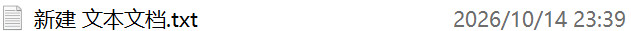
→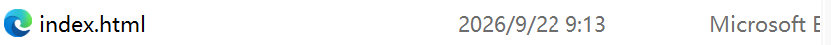
index.html（右）——右图这样才对第 0 章 · 环境准备
下载与安装 Trae
打开浏览器，访问 Trae 官网（trae.com.cn），下载对应你电脑系统（Windows 或 macOS）的安装包。
双击安装包，按提示一路"下一步"完成安装，和安装普通软件没有区别。
安装完成后打开 Trae，按界面提示注册账号并登录（支持手机号或邮箱注册）。
第 0 章 · 环境准备
认识界面：只需记住三个区域
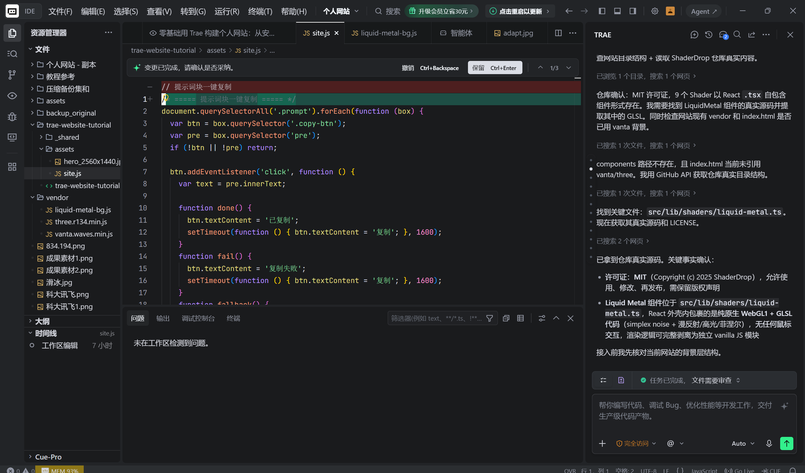
第 0 章 · 环境准备
创建项目文件夹，并在 Trae 中打开它
先在电脑里新建一个专用文件夹：在桌面或"文档"中右键 → 新建 → 文件夹，起一个简单的英文名，比如 my-website。
回到 Trae，点击打开文件夹（Open Folder，欢迎页或左上角菜单中），在弹出的系统窗口里选中 my-website，点"选择文件夹"。
如果弹出"是否信任此文件夹中的作者"，点击信任。之后左侧文件区会显示这个文件夹——它就是你网站的全部家当。
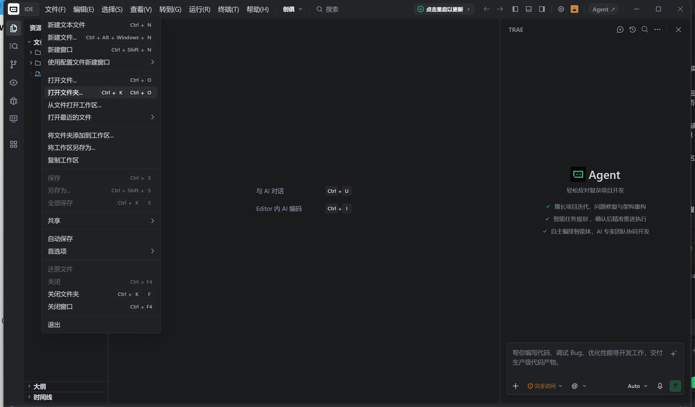
my-website。也可以直接把文件夹拖进 Trae 窗口，效果相同。本章验收
- Trae 已安装并能正常打开，已登录账号
- 能指出文件区、编辑区、AI 对话区分别在哪儿
- 已创建项目文件夹，并在 Trae 中成功打开它
第 1 章 · 准备内容
把已有材料整理成 AI 能用的形式
你已经有简历和素材储备，这一步不用从零写内容，只需对照下表确认每类材料都有出处，待会儿直接喂给 AI。
| 模块 | 确认有什么 | 形式 |
|---|---|---|
| 基本信息 | 姓名/称呼、一句话定位、联系方式 | 文字 |
| 教育背景 | 学校、专业、时间段 | 文字 |
| 实习与经历 | 每段 2–4 个要点，含量化成果 | 简历中已有 |
| 项目与作品 | 项目名、你的职责、结果，附截图 | 文字 + 图片 |
| 奖项与证书 | 奖项名称、证书照片 | 文字 + 图片 |
| 照片 | 头像、能展示工作或作品的图 | 图片文件 |
暂时没有实习或竞赛经历，也可以开始
先准备最小内容清单：姓名或昵称、一句话介绍、学校或学习方向、一项课程作业或个人实践，以及愿意公开的联系方式。没有的数据和成果直接省略——不必先有一份漂亮简历，才能做出第一版网站。
真实性三原则（写给 AI 的硬约束）
- 已完成、进行中、计划中分清——"正在阅读论文"不写成"已完成研究"。
- 没有依据的日期、数据、奖项不写——缺失就标【待补充】，不让 AI 自由发挥。
- 引用别人的材料注明来源——论文截图能证明在研读，不等于发表了它。
第 1 章 · 准备内容
可选：先让 AI 把简历润色一遍
你的简历素材已经很全，这一步不是重写，而是让 AI 帮你把排版和表达整理得更清楚，作为后续生成网站的高质量输入。把下面这条提示词和简历文本一起发给 Trae：
你现在是一名顶级简历顾问和 HR 面试官，擅长为互联网 / 咨询 / 金融 / 科研 / 出国申请等方向打造高质量简历。 我将给你我目前的个人简历 / 素材。 你的任务： 不做任何分析报告，不输出步骤解释，直接输出一份排版清晰、语言专业、结果导向、适合 HR 快速阅读的完整简历成稿。 语言风格简洁有力，使用动词 + 结果导向（如"提升…X%""主导…项目""负责…团队"）。 按照以下顺序排版： 1. 抬头（姓名、联系方式、LinkedIn 或 GitHub 等） 2. 教育背景 3. 专业技能 4. 工作 / 实习经历（倒序，重点突出成果与影响） 5. 项目经历（如有） 6. 获奖与证书（如有） 每条经历用 3–5 条要点描述，按 STAR 逻辑（情境→行动→结果）隐含展开，尽量包含可量化结果（如"效率提升 30%""用户增长 5 万+"）。 使用中文输出，排版整齐美观（Markdown 格式）。 可适度美化表达，但不要偏离事实；素材缺失请用【待补】占位，不要编造。 不输出任何解释性文字，只输出最终优化后的简历文本。 【在这里粘贴你的简历内容】
生成后先自己过一遍、做必要的修改——删掉不想要的美化，补上它漏掉的亮点——确认内容完全符合事实之后，再拿它进入第 2 章搭建网站。
第 1 章 · 准备内容
素材文件：命名与压缩
把照片、截图集中到项目文件夹里（可以建一个 assets 子文件夹），按两条规则处理：
- 文件名用英文小写，不要中文和空格：
photo.jpg、work_1.jpg、cert_english.jpg。这一步能避开上线后最常见的图片丢失问题（第 5 章细讲）。 - 适度压缩：头像建议 ≤200KB，普通截图 ≤100KB 左右；本来就小的清晰图片保持原样。免费压缩工具：iloveimg.com。
这一步做不完也没关系，第 4 章会专门讲素材怎么进网站。
本章验收
- 每类内容都确认了出处（简历 / 奖状 / 实习材料等），没有编造
- 进行中与已完成的事项分得清
- 照片已改为英文小写文件名，放进项目文件夹
第 2 章 · 生成第一版
一段提示词，得到第一版网站
把下面提示词 ② 中【】部分换成你的信息，发给 Trae，AI 就会在项目文件夹里创建出完整网站。
# 角色 你是一名资深前端工程师与品牌设计师，熟悉招聘流程与 HR 阅读习惯。 # 任务 请在当前项目文件夹中创建一个单文件个人网站 index.html。 只使用内联 CSS/JS，不引用任何外部资源（无 CDN、无在线字体、无外链图片）， 能直接在国内网络环境中用浏览器打开。 # 目标 - 让访客在 30–60 秒内抓住关键信息：我是谁、会什么、做过什么、怎么联系。 - 页面有设计感：布局精致、配色有层次、动效柔和但不喧宾夺主。 - 结构层次清晰，带顶部锚点导航。 - 响应式布局，正确设置 viewport，手机与电脑上都好看。 # 我的信息 【在这里粘贴你的简历与第 1 章整理的内容】 # 页面结构（可按我的内容增删） - 导航栏（固定顶部）：姓名 / 各板块锚点 - 首页摘要区：一段自我介绍 + 技能关键词徽章 + 联系方式按钮 - 亮点成果区：3–5 条可量化成绩 - 经历区：按工作 / 实习 / 校园展示，含时间与职责要点 - 项目区：卡片式布局，含项目名、技术栈、结果 - 技能矩阵：用进度条或徽章表示 - 教育与证书 - 页脚：版权与更新时间 # 设计风格 - 字体：系统字体栈，中英文混排清晰。 - 配色：一主色 + 一辅色 + 中性色，视觉有层次。 - 布局：Grid / Flex 响应式，自适应手机到桌面。 - 动效：150–250ms，卡片悬停浮起，进入淡入。 # 要求 - 只创建 index.html 一个文件。 - 我提供的信息之外，缺失的内容用【待补充】占位，不要编造。 - 完成后告诉我如何预览这个网页。
第 2 章 · 生成第一版
发出提示词之后：让文件真正落盘
从"发送提示词"到"网站真的出现在文件夹里"，中间还有几个小动作——第一次用最容易卡在这里。
确认当前对话处于能直接编辑项目文件的模式（Builder / Agent 模式），而不是纯问答模式——纯问答只会回复代码，不会建文件。
发送提示词，等待任务执行完成：AI 会陆续列出它创建、修改了哪些文件。
如果出现"变更已完成，请确认是否采纳"之类的变更审查，检查变更内容后点保留——不点保留，修改不会真正写入文件。
看左侧文件区：确认出现了 index.html，点开能看到代码，说明文件已经保存到项目文件夹里，可以进入下一步预览了。
AI 只回了一堆代码、没建文件？
把下面这句补发给 AI：
请直接在当前已打开的项目文件夹中创建并保存 index.html，不要只在对话中输出代码。
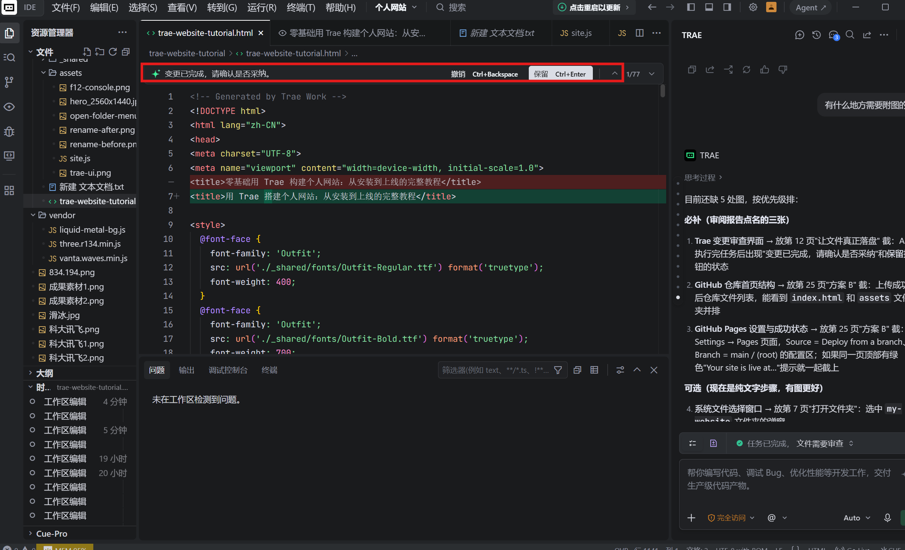
第 2 章 · 生成第一版
预览你的第一版网站
最简单：在文件管理器里找到项目文件夹，双击 index.html，它会用默认浏览器打开。
更规范（电脑装有 Python 时）：在项目文件夹里打开终端，运行下面的命令，浏览器访问 http://127.0.0.1:8765/。终端保持开着，结束时按 Ctrl+C。
python -m http.server 8765 --bind 127.0.0.1
注意：127.0.0.1 这个地址只能自己看，不是能发给别人的网址——那要等第 6 章部署之后才有。
第一版只要"能用"
第一版不完美非常正常。专业做法是先生成一个 60 分的版本，再靠第 3 章的迭代方法一轮轮改到 90 分。看到页面在浏览器里真的显示出来，这一步就成功了。
本章验收
- 项目文件夹里出现了 index.html，浏览器能正常打开
- 页面内容与事实相符，编造的部分已要求改为【待补充】
- 导航锚点点击后能滚动到对应板块
第 3 章 · 迭代打磨
把"不好看"说成具体指令
迭代效果的好坏，主要取决于反馈方式。AI 听不懂模糊感受，但能精确执行"哪个区域、有什么问题、改成什么样"的指令。
| 模糊反馈（难执行） | 具体指令（这样说） |
|---|---|
| "做得高级一点" | "把首页标题字号调大，增加标题与正文之间的间距" |
| "这里不好看" | "项目区卡片间距太小，请从 8px 增加到 24px" |
| "手机上怪怪的" | "手机上导航栏挤成了两行，请改成折叠菜单" |
| "颜色不喜欢" | "把全站主色从蓝色换成深绿色，辅助色和文字颜色不变" |
如果用截图反馈，在图上标出位置，说清问题和期望："科研板块中间列太长，左右留白失衡；请改为左侧阶段、右侧正文的时间轴，保留现有字体和配色。"
第 3 章 · 迭代打磨
三类最常用的修改指令
日常迭代基本逃不出这三类，共同点都是说清改哪里、改成什么、什么不要动。
改文案
把首页摘要区第一段自我介绍改为：【新文案】。只改这一段，其他内容不动。
换配色
把全站主色从现在的蓝色换成深绿色（建议 #1B5E20），辅助色和文字颜色保持不变。只改配色，不改布局。
调布局
项目区的卡片从一行三张改为一行两张，卡片间距保持不变，手机端仍然一行一张。
两条纪律
- 一次只改一件事：确认满意再提下一个，出错才知道是哪步改坏的。
- 大改之前先备份：复制整个项目文件夹，按"日期 + 用途"命名，例如
my-website_备份_20261014_改配色前。
第 3 章 · 迭代打磨
不止文字和布局：动效与整体风格也能改
网页的"质感"往往来自动效和审美风格，这两类同样可以点名让 AI 调整，而且很有必要点出来——很多人改完内容就觉得没东西可改了。
调动效
把卡片的悬停动效改成轻微上浮并加深阴影，时长 200ms；进入页面时的淡入效果保持不变。
改整体审美风格
把整体风格往"极简、克制、大留白"的方向调整：减少装饰元素和色块，拉开段落间距，只保留必要的分隔线。内容结构不变。
审美感受天然模糊——"想要高级感但说不清"时，有两条路：下一页直接给你 5 套现成风格，挑一套整段复制即可；也可以先把感觉原原本本说给对话式 AI，让它翻译成具体提示词（见本章"让 AI 帮你写提示词"一节）。
第 3 章 · 迭代打磨
想换风格？这里有 5 套现成提示词
如果连"想要什么风格"都懒得描述，可以直接从下面 5 套里挑一套复制。每条都把配色、字体、卡片质感、动效和移动端要求写全了，Trae 拿到就能执行。
用 Trae 打开你已有的网页文件夹（和平时改网站一样）。
把下面某一条整段复制发给 Trae。
等它改完，浏览器刷新看效果；不满意可以再换一套，或让它只改其中一部分。
一次只换一套
别把两套风格同时发过去，AI 会混淆。换风格等于重写样式，动手前先备份当前文件，不满意好回退。
| 风格 | 一句话感觉 | 适合 |
|---|---|---|
| 1 暗黑毛玻璃 | 深色底 + 发光光斑 + 半透明卡片，硬核科技感 | 理工科、CS、AI、大数据 |
| 2 极简高级 | 黑白灰、大留白、细线条，像 Notion / Linear | 文科、商科、保研简历 |
| 3 滚动叙事 | 打字机 + 渐入 + 进度条，边滚边展开 | 经历多、项目多的同学 |
| 4 波普新丑风 | 粗黑边 + 硬投影 + 撞色贴纸，视觉冲击强 | 设计、传媒、艺术、前端 |
| 5 3D 便当盒 | 不对称栅格 + 鼠标倾斜视差，像苹果发布会 | 作品集、全栈、软硬件成果 |
接着三页是完整提示词原文，按方向选好后整段复制即可。
第 3 章 · 5 套 UI 风格 · 上
风格 1 暗黑毛玻璃 · 风格 2 极简高级
风格 1：现代科技 · 毛玻璃暗黑风
适合理工科、CS、AI、大数据方向，质感硬核、去"廉价感"。
你现在是一位资深的前端 UI/UX 设计专家。请帮我重构并美化当前工作区中的网页（保留原本所有个人文字、经历数据、图片与链接不变）。 【一、引入资源与基础配置】 1. 样式系统：引入 Tailwind CSS； 2. 图标系统：引入 Lucide Icons 图标库，在各模块标题、经历条目、技能标签、联系方式旁配置对应的精致线性图标； 3. 字体规范：引入 Google Fonts 的 "Plus Jakarta Sans"（英文与数字）与系统无衬线字体，字阶清晰，行高舒适。 【二、色彩与视觉规范】 1. 背景系统：采用极暗深色底（如 Slate-950 #030712），并在页面左上角与右下角添加 2 个大尺寸（500px+）、高模糊度（filter: blur(140px)）、低透明度（10%-15%）的青蓝（Cyan）与紫蓝（Indigo）径向发光光斑，烘托科技氛围； 2. 卡片质感：所有内容卡片采用毛玻璃风格——背景为半透明深色（bg-slate-900/60），添加 backdrop-blur-xl 模糊，边框为 1px 细微半透明亮边（border border-white/10），四角为 rounded-2xl 大圆角； 3. 文字阶梯：主标题采用纯白（text-white font-extrabold），副标题使用高亮青色（text-cyan-400），正文描述使用低饱和冷灰（text-slate-300 / text-slate-400），杜绝通篇纯白造成的刺眼感。 【三、布局与微交互升级】 1. 亮点战绩：重构为精致的指标看板，大号渐变数字搭配小号说明，Hover 时产生柔和的青色微发光与上浮（-translate-y-1）； 2. 经历与项目：采用左侧垂直时间轴或双列卡片，技术栈标签使用胶囊徽章（bg-cyan-500/10 border border-cyan-500/20 text-cyan-300）； 3. 交互按键：按钮添加 Hover 辉光动画；为"复制邮箱"按钮绑定原生剪贴板复制逻辑，并在屏幕底部弹出精致的毛玻璃 Toast 提示； 4. 移动端适配：严格测试响应式布局，手机端卡片自动单列排列，间距自适应，横向不产生滚动条。
风格 2：极简高级 · Notion / Linear 生产力风
适合文科、商科、管理科学方向与保研简历，排版清晰克制，观感专业。
你现在是一位精通现代排版学的前端设计师。请帮我将当前网页重构为极简、克制且高可读性的【Linear / Notion 极简生产力风格】（严格保留原有全部个人信息与结构）。 【一、引入资源与基础排版】 1. 样式与图标：引入 Tailwind CSS 与 Lucide Icons； 2. 字体排版：引入 Geist 或 Inter 字体，页面最大宽度约束为居中 max-w-3xl 或 max-w-4xl，提供开阔透气的留白节奏（Padding 与 Margin 适度拉大）； 3. 配色哲学：黑白灰为主基调。纯净浅灰背景（#FAFAFA / Slate-50），容器使用纯白（#FFFFFF），边框使用极细的浅灰线（border-zinc-200 / border-slate-200）。 【二、模块与组件设计】 1. 头部区域：去繁就简，左侧为大号加粗姓名与定位，右侧精简放置"打印"与"联系方式"，杜绝大面积花哨渐变； 2. 经历板块：采用极简垂直时间轴，轴线为 1px 浅灰实线，节点为 6px 纯黑 / 深灰实心圆点； 3. 项目展示：使用克制的带边框卡片，技术标签采用浅灰纯色底（bg-zinc-100 text-zinc-600 text-xs），去除厚重阴影； 4. 状态徽章：在学历或求职状态处使用精致的 Pill Badge，内嵌 4px 绿色微小指示灯（Ping 呼吸微动效可选）。 【三、细节与功能要求】 1. 交互动效：克制优雅。链接 Hover 时出现平滑的下划线展开动效，卡片 Hover 仅产生极轻微的边框颜色加深（border-zinc-400），不使用夸张位移； 2. 打印友好：编写 @media print 规则，确保点击"打印"或另存为 PDF 时，自动隐藏所有按钮与无用装饰，输出排版完美的 A4 纸质简历； 3. 一键复制：保留邮箱 / 微信一键复制功能并带有轻量级文本反馈。
第 3 章 · 5 套 UI 风格 · 中
风格 3 滚动叙事 · 风格 4 波普新丑风
风格 3：动态交互 · 滚动渐入叙事风
适合经历丰富、项目较多的同学，页面随滚动层层递进。
你现在是一位擅长 Web 交互动效的专家。请在保留当前网页所有文案和数据的基础上，将其重构为一个【动态叙事与交互式个人主页】。 【一、基础库与动效引擎】 1. 引入 Tailwind CSS 构建自适应栅格； 2. 动效实现：打字机动效与页面滚动渐入动效必须使用纯原生 JavaScript / CSS 实现（严禁使用导致元素默认透明不可见的旧版 AOS 阻塞库，确保页面零延迟秒开）； 3. 引入轻量 Canvas 粒子库（或原生 Canvas 代码）用于操作反馈。 【二、叙事式视觉与动效规划】 1. 顶部全局滚动进度条：固定在屏幕最顶部（h-1），随着用户向下滑动页面，进度条实时线性填充（渐变色 from-cyan-400 to-emerald-400）； 2. 首屏打字机叙事：在主标题下方设置动态文本容器，循环平滑打出身份关键词（如："数据分析探索者""全栈开发学习者""AI 应用实践者"），带有呼吸感闪烁光标； 3. 视差卡片渐入：利用 IntersectionObserver API 监听滚动，当经历与项目卡片滑入视口时，按顺序附加平滑上浮渐入动画（fade-slide-up）； 4. 惊喜交互：点击"复制邮箱"或"打招呼"按钮时，在光标位置发射一波彩带粒子动画（Confetti），并弹出气泡反馈。 【三、稳定性约束】 1. 保证渐入动画有降级方案（即使脚本未执行，元素初始透明度也必须为 1，确保绝对不发生白屏）； 2. 动画帧率保持 60fps，不产生重排抖动； 3. 移动端触摸滚动顺畅自然。
风格 4：活力新丑风 · 波普复古
适合设计、传媒、艺术、前端开发等强调个性与视觉冲击力的方向。
你现在是一位专注于 Neo-Brutalism（新丑风 / 粗野波普风）的先锋网页设计师。请帮我将当前网页重构成极具视觉冲击力的【波普硬核新丑风】（保持原有文案、数据与链接完整）。 【一、组件库与排版基础】 1. 引入 Tailwind CSS 与 Remix Icon 图标库； 2. 引入 Google Fonts 的 "Space Grotesk" 或 "Archivo Black" 粗黑几何字体，所有标题必须采用超粗字重（font-black / font-extrabold）； 3. 全局底色：使用高明度低饱和波普米黄底（#FFFDF0），搭配网点 / 点状背景纹理（20px 间隔纯黑波点）。 【二、新丑风核心设计语言（严格执行）】 1. 硬边框：所有卡片、容器、按键、头像框一律使用 2px 至 3px 纯黑硬实线边框（border-2 或 border-[3px] border-black）； 2. 硬投影：严禁使用高斯模糊投影，一律使用纯黑硬色块位移投影（box-shadow: 4px 4px 0px 0px #000，或 Tailwind 的 shadow-[4px_4px_0px_0px_#000]）； 3. 碰撞色彩体系：主强调色为高亮薄荷绿（#A3E635）、活力紫（#C084FC）、亮黄（#FDE047）、天空蓝（#38BDF8）；卡片底色大面积使用白底或微黄底，内部标题徽章采用碰撞色块； 4. 贴纸徽章：标签与 Badge 设置随机微小旋转角（-2deg 到 2.5deg），模拟实体潮流贴纸效果。 【三、物理按压微交互】 1. 实体按钮反馈：按钮 Hover 时向右下移动 2px（translate-x-[2px] translate-y-[2px]），阴影缩小为 2px；Active（点击）时完全贴合底面（translate-x-1 translate-y-1，阴影为 0），还原真实按键手感； 2. 卡片 Hover：悬浮时产生轻微反向位移并加深阴影； 3. 移动端适配：确保硬阴影在窄屏手机上不产生横向溢出与布局挤压。
第 3 章 · 5 套 UI 风格 · 下
风格 5 立体便当盒 · 以及更多现成动效
风格 5：数字化空间 · 3D 卡片与立体视差（Bento Grid）
适合展示综合作品集、软硬件成果、全栈开发经历。
你现在是一位专注于数字化空间设计的前端专家。请帮我将当前网页重构为现代流行的【苹果 / Bento Grid（便当盒栅格）+ 3D 悬浮视差空间】（保留原网页的所有文字、数据与链接）。 【一、引入依赖与布局结构】 1. 引入 Tailwind CSS 与 Lucide Icons； 2. 引入 Vanilla-Tilt.js（轻量级 3D 视差倾斜库）； 3. 布局体系：全面采用 CSS Bento Grid 栅格系统（桌面端 3 列或 4 列不对称网格布局，移动端自适应单列）。 【二、Bento 便当盒卡片规划】 1. 核心主卡片（占 2 列跨度）：放置个人大号姓名、专业背景、核心优势介绍与主要联系方式； 2. 战绩卡片（占 1 列，方块）：大号渐变数字突出展示 GPA、获奖排名等核心指标； 3. 主打项目卡片（占 2 列）：图文并茂展示核心项目，附带技术标签与成果数据； 4. 技能聚合卡片（占 1 列）：使用 Bento 胶囊形式展示编程语言与框架栈； 5. 经历条目卡片（占满整行 3 列）：横向流动展示工作 / 实习经历时间轴。 【三、3D 视差与光效渲染】 1. 3D Tilt 挂载：为每个 Bento 卡片挂载 Vanilla-Tilt 属性（设置 data-tilt、data-tilt-max="6"、data-tilt-speed="400"、data-tilt-glare 反光扫光效果）； 2. 材质质感：卡片采用深色半透明（bg-zinc-900/90 border border-zinc-800），四角为 rounded-3xl 超大圆角； 3. 移动端降级保护：在移动端或触摸屏设备上，通过 JS 自动销毁 / 禁用 3D 倾斜效果，回退为流畅的响应式静态卡片，杜绝触摸滚动冲突。
还想更多？这些地方有现成动效可以借
- UIverse（uiverse.io）：全网最全的纯 CSS / HTML 开源微组件库，按钮、卡片、加载动效、开关都有。用法——看到喜欢的按钮，把代码丢给 Trae："把网页里的'联系我'按钮换成这个样式。"
- Codrops（tympanus.net/codrops）：动效领域的老牌站，海量滚动动效、页面过渡、导航动效，每篇都附完整 GitHub 源码包，可整包下载让 Trae 做骨架替换。
- Godly / MotionSites：全球顶级动效网页案例集，适合截图当"视觉目标"发给 Trae 让它照着做。
- decentralized-resume 等 Web-Resume 系列：纯原生 HTML + CSS 的高质感简历模板，单文件、没有框架包袱，拷下来让 Trae 把自己的履历填进去。
- decabits 等 3D 背景脚手架：星空、太阳系、流体波浪等纯 JS 视觉 Demo，可以当底层背景，上面浮内容卡片。
- Animate.css：几十种开箱即用的 CSS 动画，让 Trae 引入一行 CSS 链接就能挂载。
借现成代码的两条纪律
① 先说清楚"只替换哪一个组件"，别让它顺手整站重构；② 新动效先在一个区域试，确认不挡按钮、不拖慢手机，再推广到整页。
第 3 章 · 迭代打磨
说不清楚想改什么？让 AI 帮你写提示词
有想法但表达不精确时，可以借助一个对话式 AI（比如单开一个 DeepSeek）当"提示词翻译官"：
把你的想法原原本本说给它听：想改哪里、想要什么感觉、有没有参考的样子，不用管措辞。
让它"把以上想法整理成一份给编程 agent 使用的、具体可执行的提示词"。
把生成的提示词复制到 Trae，并在末尾加上一句：
你可以多向我提问：对你考虑到的、我没说清楚的地方，都可以先向我提问，再来细化并精确构建内容。
这样 AI 会先反问、你回答、再动手——改出来的结果会贴近预期得多。
第 3 章 · 迭代打磨
移动端适配（提示词 ③）
网站大概率会被人用手机打开。第一版生成后，建议尽早发一次提示词 ③ 专门打磨手机体验。
请检查当前 index.html 在手机上的显示效果并优化： - 正确设置 viewport，使用流式布局与触控友好的按钮尺寸； - 导航在手机上不拥挤，长标题能换行，图片不撑破容器； - 图片较多的板块使用懒加载，脚本尽量延后执行； - 保持桌面端现有布局与风格完全不变。 修改后请在浏览器中用 390×844 和 768×1024 两种尺寸检查， 并告诉我哪些地方需要我用真机再确认。
本章验收
- 能把修改需求写成"区域 + 问题 + 目标"的具体指令
- 完成过至少 2 轮"提需求 → 浏览器检查"的迭代
- 用过提示词 ③，手机上浏览没有明显挤压或溢出
- 大改之前已备份项目文件夹
第 4 章 · 照片与文件
把照片放进网站（提示词 ④）
把照片、截图复制到项目文件夹——放在 index.html 旁边，或建一个 assets 子文件夹分类存放。
再次确认文件名是英文小写、无空格，并已压缩到建议大小。
发送下面的提示词 ④。照片不需要上传给 AI，告诉它文件名和作用即可。
我希望在网页中合理嵌入几张图片，它们的文件名和作用分别是： photo.jpg 我的个人照片，放在首页摘要区 work_1.jpg 我的作品截图，放在项目区第一张卡片里 cert_1.jpg 我的证书照片，放在教育与证书板块 …… 这些文件已经放在 index.html 同级目录下（如放在 assets 文件夹中请如实说明）。 请在代码中使用相对路径直接引用文件名，不要生成不存在的链接或在线占位图。 完成后逐个检查：代码中的引用路径与实际文件名（含大小写）完全一致。
第 4 章 · 照片与文件
三个注意事项
大小写警告：photo.jpg ≠ Photo.jpg
Windows 对大小写不敏感，本地可能显示正常；但部署到服务器后大小写严格区分——本地能显示、上线后裂图，九成是这个原因。全小写命名能直接绕过这个坑。
压缩的分寸
不是越小越好：二维码、证书、公式和代码截图优先保证可读性；本来就小的清晰图片保持原样，不必为了达标反而变大。
可选：嵌入一段短视频
有作品演示或竞赛录像时，截取前 20 秒以内、压缩后的 MP4 放进项目文件夹，然后这样说：
请在作品板块嵌入同目录下的 demo.mp4，提供播放控制（controls）， 不要自动播放，并为它设置一张封面图。
本章验收
- 所有图片文件名为英文小写、无空格
- 每张图片在页面上正常显示，没有裂图
- 代码中的引用路径与文件名（含大小写）逐个核对一致
- 二维码、证书类图片放大后依然清晰可读
第 5 章 · 检查与修复
F12：检查手机效果，也给网站"看病"
用法一：模拟手机检查
浏览器打开 index.html → 按 F12 → 点工具栏的设备图标（Ctrl+Shift+M）→ 顶部选一款手机尺寸，完整滑一遍：导航挤不挤、图片超不超出屏幕。
用法二：发现不对劲，看 Console 报错
按 F12 打开开发者工具，切到 Console（控制台） 标签。
刷新页面，看有没有红色报错（如 404、Uncaught Error）。
截图时只需框选 Console 控制台区域即可，不用截整个屏幕；把截图发给 AI，并按"位置、问题、期望"描述：哪里不对、什么现象、希望怎样。
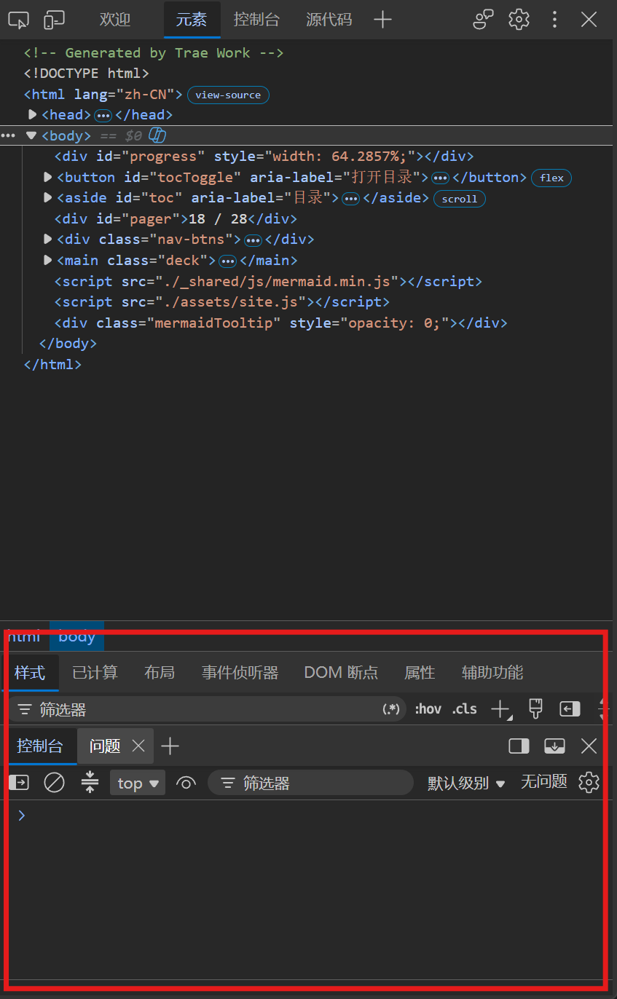
第 5 章 · 检查与修复
上线前自查 & 图片排查顺序
上线前自查清单
- 双击
index.html能正常打开，导航每个锚点都能滚动到正确位置 - 所有图片都显示，没有裂图；联系方式和外链都能点开
- 手机尺寸下浏览无明显挤压、溢出
- 逐段核对过内容，没有 AI 编造的经历或数据
- 所有文件名英文小写、无空格
图片不显示？按这个顺序排查
分开检查预览图和大图：点击能放大只证明大图链接没问题；小图不显示要单独查小图的引用。
地址返回 404：查代码里的路径与实际位置、文件名、扩展名、大小写是否完全一致。
地址能打开但页面不显示：查图片是否被隐藏、容器有没有高度、懒加载是否触发。
最后才怀疑缓存：强制刷新（Ctrl+F5），或给图片地址加版本号参数（如 ?v=2）。
第 5 章 · 检查与修复
自己搞不定？按格式报告故障（提示词 ⑤）
遇到报错别只说"网站坏了，帮我看看"。证据越具体，排查越快。按提示词 ⑤ 的格式提供信息：
网站地址：【当前网站地址，本地预览则写"本地预览"】 出问题的资源地址：【在浏览器里复制的完整图片 / 文件地址】 现象：【404 / 预览不显示但点击能打开 / 只有手机上异常 / 其他具体描述】 附件：页面异常截图 + F12 Console 报错截图 请先对比代码中的引用路径与文件夹中的实际文件路径， 检查文件名、扩展名和大小写是否完全一致。 请区分"已证实的原因"和"待验证的猜测"，不要直接假定是缓存问题。 提出最小修复方案，保留原有布局和效果； 修复后告诉我如何在浏览器中验证结果。
本章验收
- 用 F12 设备工具栏以手机尺寸完整浏览过一遍
- 上线前自查清单全部打勾
- 知道图片不显示时的四步排查顺序
- 遇到问题会截图 Console 报错，并按提示词 ⑤ 的格式描述
第 6 章 · 部署上线
方案 A：Netlify（更简单）
部署 = 把项目文件夹交给静态网站托管平台，平台返回一个公开网址。两个方案任选其一。
访问 netlify.com，用邮箱注册账号，按提示到邮箱完成验证。
登录后找到 Add new site → Deploy manually（或页面上的拖拽上传区域）。
把整个项目文件夹拖进上传区。注意传的是文件夹，不是单独拖一个 index.html——否则图片会全部丢失。
稍等片刻，平台生成 随机名字.netlify.app 的网址，点开检查一遍。
（可选）在 Site settings → Change site name 把随机名字改成好记的，比如 yourname.netlify.app。
注意：Netlify 网址在微信里可能打不开
Netlify 的网址在微信内可能无法直接打开，对方需要复制链接到浏览器访问。介意这一点（比如要把链接发到微信群、朋友圈），可以改用下面的方案 B。
第 6 章 · 部署上线
方案 B：注册 GitHub 并创建仓库
GitHub Pages 的网址在微信里能直接打开，适合需要微信传播的场景；代价是国内访问偶尔较慢或不稳定。整个方案分两步走：先建仓库（本页），再上传并开启 Pages（下页）。
访问 github.com，注册账号并登录（按页面提示完成邮箱验证）。
右上角头像 → Repositories → New 创建一个 Public 仓库（免费账户只有 Public 仓库能用 Pages）。仓库名会成为网址的一部分，起好后不要随意改，建议用简单英文如 my-site。
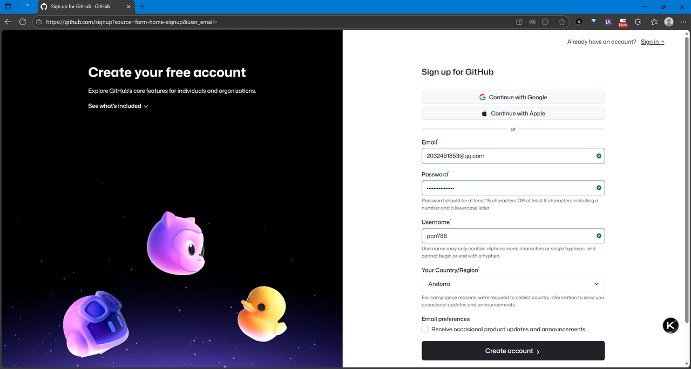
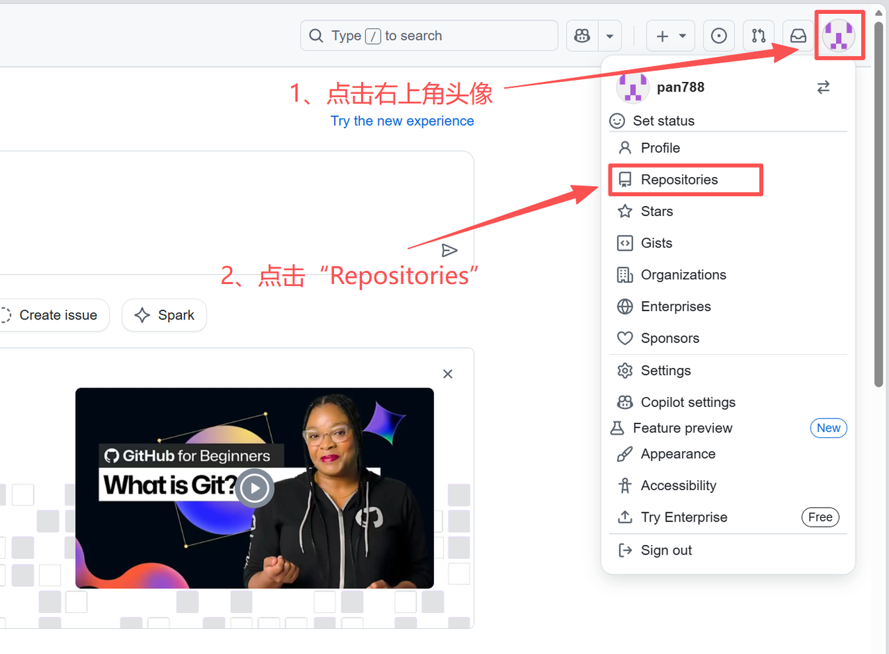
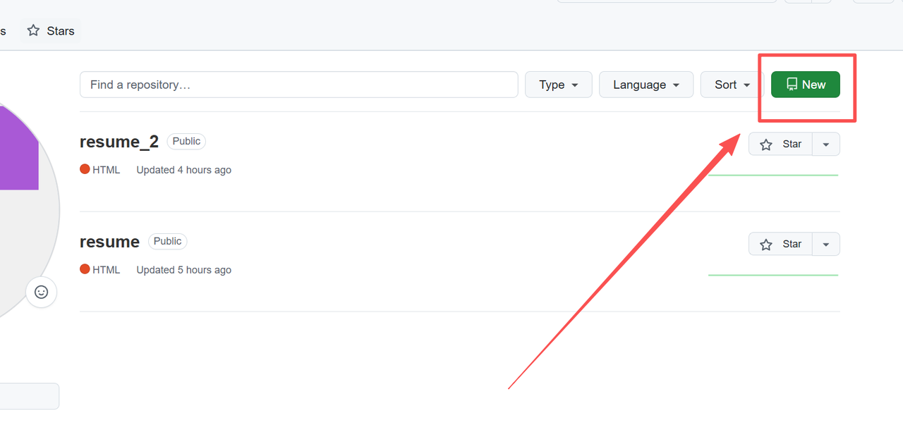
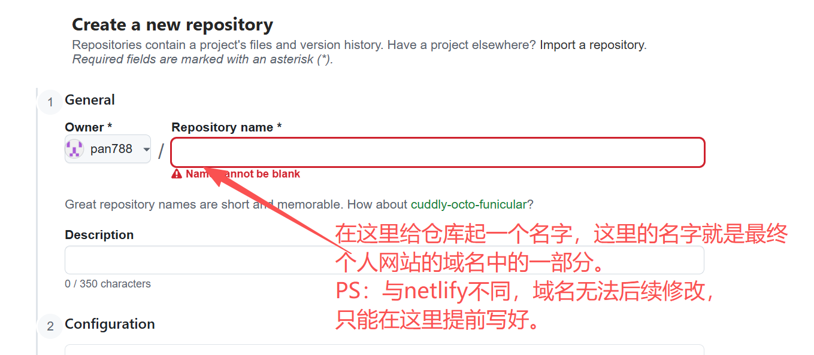
第 6 章 · 部署上线
方案 B：上传文件并开启 Pages
在仓库页面点 uploading an existing file，把 index.html 和 assets 文件夹一起拖入上传区域，保持目录结构，然后点 Commit changes。
进入仓库 Settings → Pages：在 Build and deployment 中，Source 设为 Deploy from a branch；Branch 设为 main、目录 / (root)，点 Save。
等待部署完成（以 Pages 页面的部署状态提示为准），出现 https://用户名.github.io/仓库名/ 即为网址，打开检查一遍。
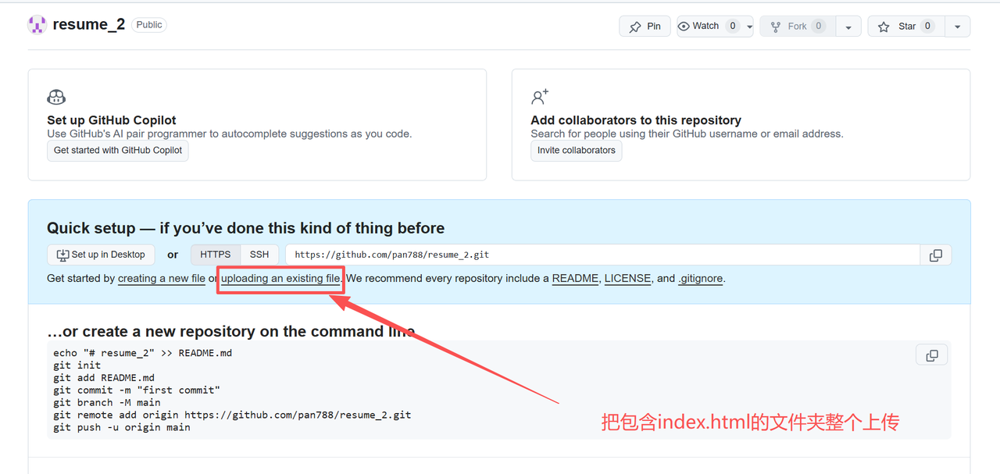
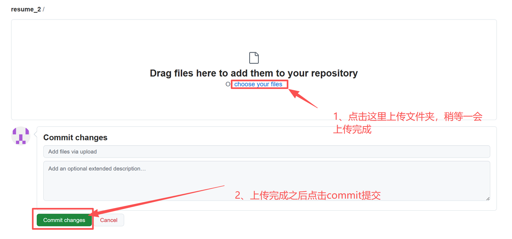
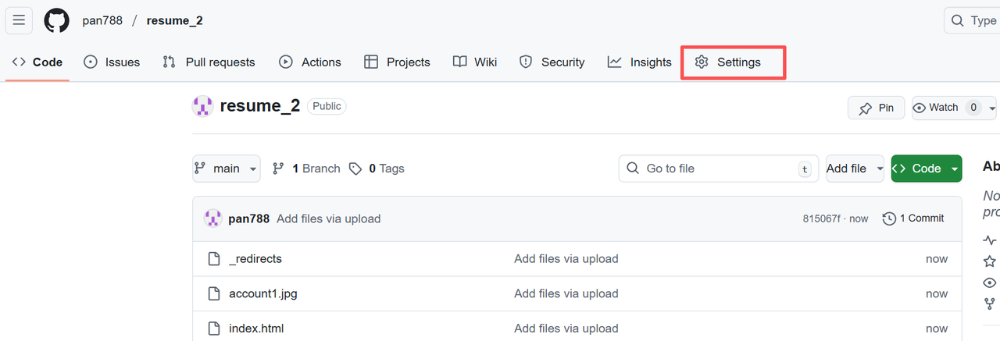
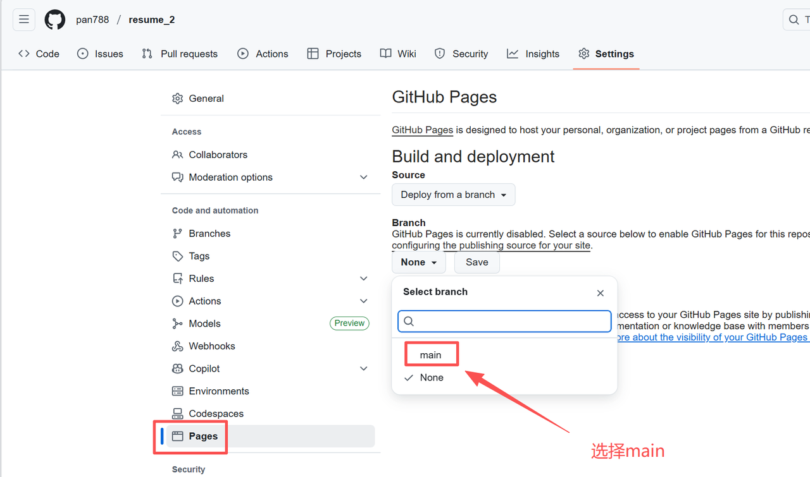
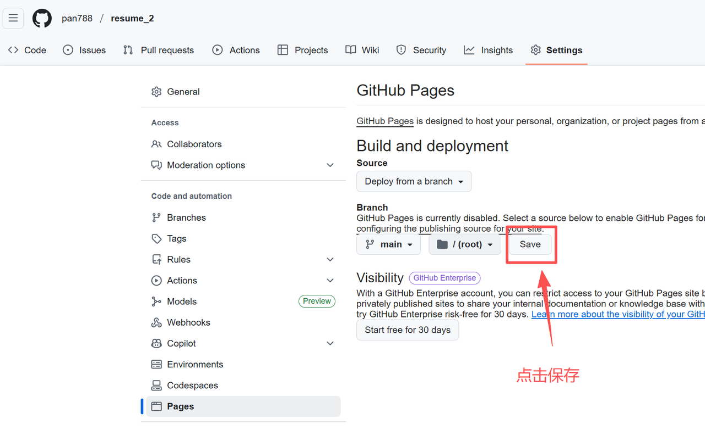
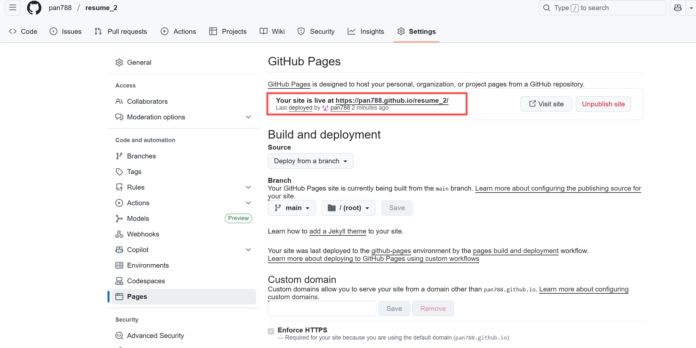
index.html 在最外层，从 Settings 进 Pages → ④ Branch 选 main → ⑤ 目录 / (root) 点 Save → ⑥ 出现"Your site is live at…"即部署成功上传完成后，仓库首页应该看到这样的结构——打开 assets 再确认图片都在里面：
index.html assets/ photo.jpg work_1.jpg
发布后在浏览器和微信里都实际打开测试一下，访问情况可能受网络和客户端影响。
三个常见坑
index.html必须在发布目录最外层，不能多套一层文件夹。- 引用图片用相对路径（
assets/photo.jpg），不要以 / 开头。 - ZIP 压缩包先解压再上传——上传 ZIP 本身不会自动展开。
第 6 章 · 部署上线
生成二维码 & 以后怎么更新
把网址变成二维码
访问 ma3you.com 注册登录 → 选"网址"类型 → 粘贴你的网站地址 → 生成 →（可选）美化时上传头像作 Logo → 免费下载。二维码可以印在手机壳、简历或名片上。
以后怎么更新网站
两个平台的更新方式不一样，别混用：
- Netlify（手动部署）：每次把完整的网站文件夹重新拖入 Deploys 页面，网址不变。不要只传单文件——只传 index.html 会让图片全部丢失。
- GitHub Pages：在原仓库的对应位置上传改动的文件并 Commit changes，等待重新部署：
| 你改了什么 | GitHub 上要更新的文件 |
|---|---|
| 只改了文字、颜色、布局 | 仅 index.html |
| 新增或替换了图片 | index.html + 改动过的图片（传到 assets 里对应位置） |
| 新增了视频等新文件 | 新文件 + index.html |
原则只有一句：引用关系变了，被引用的文件就要跟着一起传。
本地改完 ≠ 线上更新
每次修改都必须重新部署，别人才能看到最新版本。本地预览里的最新效果只存在于你的电脑上——改完后先本地检查确认，再把改动的文件重新上传（Netlify 重新拖入文件夹 / GitHub 重新上传），上传后打开网址核对一遍才算完成。
本章验收（毕业标准）
- 得到一个能公开访问的网址，并已用浏览器打开验证
- 网站上图片、视频全部正常显示
- 用手机浏览器访问，排版正常
- 把网址发给一位朋友，对方能成功打开
附录 A · 提示词合集
提示词 ① · ②
你现在是一名顶级简历顾问和 HR 面试官，擅长为互联网 / 咨询 / 金融 / 科研 / 出国申请等方向打造高质量简历。 我将给你我目前的个人简历 / 素材。 你的任务： 不做任何分析报告，不输出步骤解释，直接输出一份排版清晰、语言专业、结果导向、适合 HR 快速阅读的完整简历成稿。 语言风格简洁有力，使用动词 + 结果导向（如"提升…X%""主导…项目""负责…团队"）。 按照以下顺序排版： 1. 抬头（姓名、联系方式、LinkedIn 或 GitHub 等） 2. 教育背景 3. 专业技能 4. 工作 / 实习经历（倒序，重点突出成果与影响） 5. 项目经历（如有） 6. 获奖与证书（如有） 每条经历用 3–5 条要点描述，按 STAR 逻辑（情境→行动→结果）隐含展开，尽量包含可量化结果（如"效率提升 30%""用户增长 5 万+"）。 使用中文输出，排版整齐美观（Markdown 格式）。 可适度美化表达，但不要偏离事实；素材缺失请用【待补】占位，不要编造。 不输出任何解释性文字，只输出最终优化后的简历文本。 【在这里粘贴你的简历内容】
# 角色 你是一名资深前端工程师与品牌设计师，熟悉招聘流程与 HR 阅读习惯。 # 任务 请在当前项目文件夹中创建一个单文件个人网站 index.html。 只使用内联 CSS/JS，不引用任何外部资源（无 CDN、无在线字体、无外链图片）， 能直接在国内网络环境中用浏览器打开。 # 目标 - 让访客在 30–60 秒内抓住关键信息：我是谁、会什么、做过什么、怎么联系。 - 页面有设计感：布局精致、配色有层次、动效柔和但不喧宾夺主。 - 结构层次清晰，带顶部锚点导航。 - 响应式布局，正确设置 viewport，手机与电脑上都好看。 # 我的信息 【在这里粘贴你的简历与第 1 章整理的内容】 # 页面结构（可按我的内容增删） - 导航栏（固定顶部）：姓名 / 各板块锚点 - 首页摘要区：一段自我介绍 + 技能关键词徽章 + 联系方式按钮 - 亮点成果区：3–5 条可量化成绩 - 经历区：按工作 / 实习 / 校园展示，含时间与职责要点 - 项目区：卡片式布局，含项目名、技术栈、结果 - 技能矩阵：用进度条或徽章表示 - 教育与证书 - 页脚：版权与更新时间 # 设计风格 - 字体：系统字体栈，中英文混排清晰。 - 配色：一主色 + 一辅色 + 中性色，视觉有层次。 - 布局：Grid / Flex 响应式，自适应手机到桌面。 - 动效：150–250ms，卡片悬停浮起，进入淡入。 # 要求 - 只创建 index.html 一个文件。 - 我提供的信息之外，缺失的内容用【待补充】占位，不要编造。 - 完成后告诉我如何预览这个网页。
附录 A · 提示词合集
提示词 ③ · ④
请检查当前 index.html 在手机上的显示效果并优化： - 正确设置 viewport，使用流式布局与触控友好的按钮尺寸； - 导航在手机上不拥挤，长标题能换行，图片不撑破容器； - 图片较多的板块使用懒加载，脚本尽量延后执行； - 保持桌面端现有布局与风格完全不变。 修改后请在浏览器中用 390×844 和 768×1024 两种尺寸检查， 并告诉我哪些地方需要我用真机再确认。
我希望在网页中合理嵌入几张图片，它们的文件名和作用分别是： photo.jpg 我的个人照片，放在首页摘要区 work_1.jpg 我的作品截图，放在项目区第一张卡片里 cert_1.jpg 我的证书照片，放在教育与证书板块 …… 这些文件已经放在 index.html 同级目录下（如放在 assets 文件夹中请如实说明）。 请在代码中使用相对路径直接引用文件名，不要生成不存在的链接或在线占位图。 完成后逐个检查：代码中的引用路径与实际文件名（含大小写）完全一致。
附录 A · 提示词合集
提示词 ⑤
网站地址：【当前网站地址，本地预览则写"本地预览"】 出问题的资源地址：【在浏览器里复制的完整图片 / 文件地址】 现象：【404 / 预览不显示但点击能打开 / 只有手机上异常 / 其他具体描述】 附件：页面异常截图 + F12 Console 报错截图 请先对比代码中的引用路径与文件夹中的实际文件路径， 检查文件名、扩展名和大小写是否完全一致。 请区分"已证实的原因"和"待验证的猜测"，不要直接假定是缓存问题。 提出最小修复方案，保留原有布局和效果； 修复后告诉我如何在浏览器中验证结果。
附录 B · 常见问题
FAQ（上）
微信里点开链接提示"用浏览器打开"？
平台域名在微信内置浏览器里可能受限制，这不是你的网站坏了。让对方复制链接到浏览器打开，或生成二维码扫码后选择浏览器打开。
AI 给我编造了不存在的经历或数据？
在提示词里写明"缺失信息用【待补充】占位，不要编造"（提示词 ② 已内置）。生成后逐段核对，发现编造直接指出："XX 板块中的 XX 内容是编造的，请改为【待补充】"。
怕越改越坏，怎么办？
每轮大改前复制整个项目文件夹做备份（命名见第 3 章）。改坏了可以用备份重新开始，或让 AI 参考备份把对应板块恢复回去。
保存修改后，会自动同步到已部署的网站吗？
不会。保存只改了你电脑上的文件，线上要重新部署一次才会更新。好消息是不用从头再来：进上次部署的那个项目，重新上传一遍文件即可——Netlify 是找到原站点重新拖入整个文件夹，GitHub Pages 是在原仓库对应位置更新文件并提交，然后等它重新部署。
附录 B · 常见问题
FAQ（下）
图片在本地能看到，上线后变成裂图？
九成是文件名大小写或路径不一致（服务器严格区分大小写）。按第 5 章的四步顺序排查；解决不了就把地址和现象按提示词 ⑤ 的格式发给 Trae。
Netlify 上传后图片全丢了？
检查是不是只拖了 index.html 一个文件。Netlify 手动部署要传的是整个文件夹，图片、视频都要在里面。
Netlify 给的网址打不开？
Netlify 是国外平台，国内直连不稳定，有时需要科学上网，也可能只是当下网络波动。换个网络或过一会儿再试；急着分享的话可以先用 GitHub Pages 的备用网址。分享之前，最好自己在目标网络下先打开测一遍。
手机上的排版和电脑上不一样？
先发提示词 ③ 做一轮移动端适配，再用 F12 设备工具栏切到手机尺寸检查。两端长得不一样是正常的——响应式布局本来就是为两种屏幕分别优化。
结语
你的网站会和你一起长大
到这里，从安装 Trae 到网站上线的完整流程已经走完。这套方法的价值不在某一个工具，而在于一个可复用的节奏：先整理真实的内容，再把想法写成具体的指令，最后在浏览器里验证每一步结果。
以后有了新项目、新照片、新进展，回到第 3 章的迭代节奏，一轮一轮改下去就好。
注：各平台界面可能随版本更新变化，以你实际看到的为准。